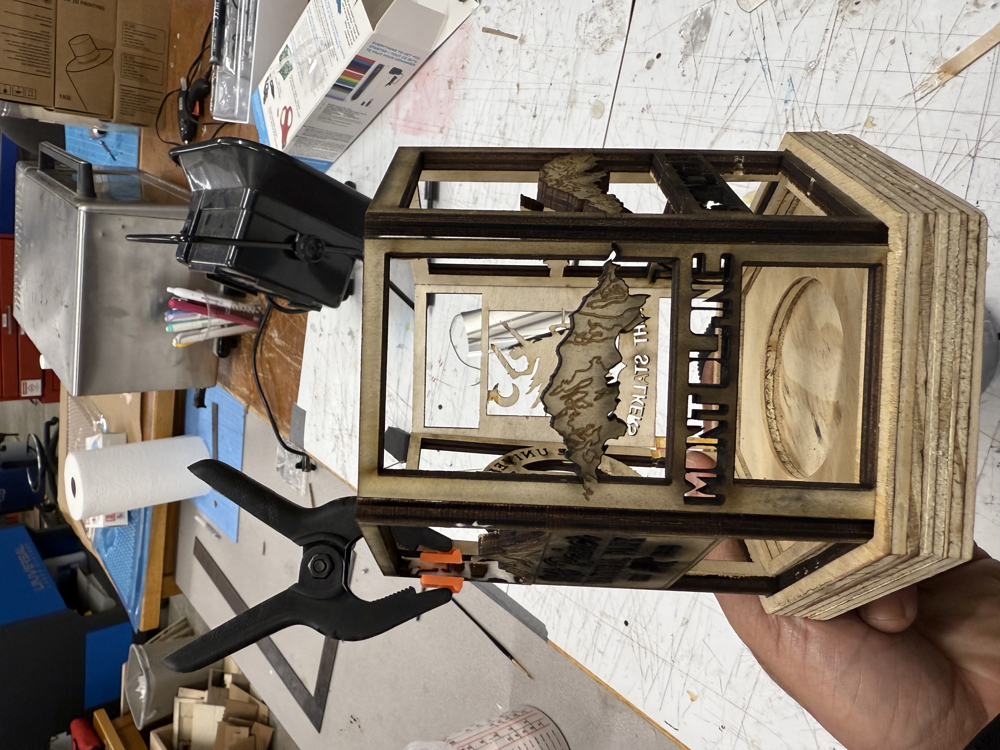

<div class="textcontainer">
<p class="margin"> </p>
<h3>Week 8: CNC Milling</h3>
<h4>Assignment: Make Something With CNC</h4>
For this assignment I wanted to make a six sided lantern to house a candle as the source of light.
This was my inspiration for the product
<br></br>
<br></br>
Initially I thought this would be a rather quick build, as it goes with any project it took 12 hours longer than I thought it would.
<br></br>
<li>
The initial friction point I ran into was creating the platform that the candle and frame of lantern would sit.
</li>
<br></br>
<br></br>
As I designed and cut the base the measurments were milimeters off and the collar would not sit properly
<br></br>
<br></br>
After I revised the measurements in Fusion with the help of Bobby, I was able to get the collar to sit properly. From there I had to design the lantern walls. I cut them using the laser cutter, however, I had issues with designing the walls to cast shadows. We revised the walls to project through the negative space of the designs vs throguh the cut hole of the design.
<br></br>
<br></br>
Once that was figured out, the rest of the time of the project was spent designing the walls in a combinaiton of Fusion and Rhino to get the final product
<br></br>

<br></br>
<br></br>
<img style = "width: 33vw;"src="./IMG_0704.jpeg" alt="generic placeholder image">
<br></br>
</div>